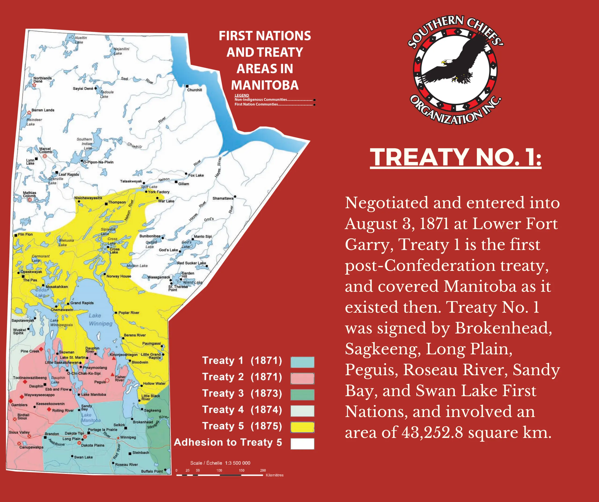

.gif)
Introduction to Treaty 1
Treaty 1, also known as the Stone Fort Treaty, was the first of the numbered treaties signed in Canada. It was negotiated in August 1871 between the Canadian government and representatives from the Ojibwe and Swampy Cree nations of southern Manitoba. The treaty established a formal relationship between the Crown and Indigenous peoples about sharing of the land. The negotiations took 8 days and resulted in promises of various benefits to Indigenous peoples in this treaty.
Treaty No. 1 was negotiated in August 1871 by Canadian government and representatives from the Ojibwe and Swampy Cree nations of southern Manitoba. It was an agreement between the Crown and Indigenous peoples about sharing of the land, which established a formal relationship. The negotiations took 8 days.
Why was Treaty 1 Important?
Treaty 1 was important because it established a formal relationship between the Canadian government and Indigenous peoples in southern Manitoba. It was the first of the numbered treaties signed in Canada and set a precedent for future treaties. The treaty promised various benefits to Indigenous peoples in this treaty.
Treaty 1 was required because the Canadian government was attempting to gain legal control over lands which were held at the time by various Native groups staying in Manitoba. The treaty states the Queen Victoria was interested in expanding settlement westward, onto lands that the Natives currently lived in. It was also used as supposed act of good will and peace between the Natives and the Canadian government.
Where Was Treaty 1 Signed?
Indian Treaty No. 1, or The Stone Fort treaty, as it is also known as the first treaty before the next 10 numbered treaties in Western Canada.
It is still in effect today and is commemorated by a plaque at Lower Fort Garry national historic site of Canada, near Winnipeg, Manitoba. The fort, dubbed the Stone Fort by local First Nations peoples, was commemorated for its association with treaty negotiations and as an important Hudson’s Bay Company post.
Conclusion
Treaty 1 was a significant agreement between the Canadian government and Indigenous peoples in southern Manitoba. It established a formal relationship and set a precedent for future treaties. However, the actual intent behind the treaty was to remove the First Nations from their land and to provide benefits that were not fulfilled.
The treaty is still in effect today and serves as a reminder of the complex history between Indigenous peoples and the Canadian government.
